Pengtao Chen
Ph.D. Student
Embedded Deep Learning and Visual Analysis Lab
College of Future Information Technology, Fudan University (FDU)
Address: 2005 Songhu Rd, Yangpu, Shanghai, China, 200438
E-mail: Pengt.Chen@gmail.com
Biography
[ ]
]
I am currently a fourth-year Ph.D. student at the College of Future Information Technology, Fudan University, Shanghai, China, supervised by Prof. Tao Chen. I received my B.S. degree from the School of Information Engineering, Zhejiang University of Technology, Hangzhou, China, in 2022, advised by Prof. Qi Xuan. My research interests lie in Diffusion Model, Model Compression, and Efficient Model Design. I am a research intern at the StepFun, working closely with Gang Yu and Xianfang Zeng.
Publications
[]
[]
[ ]
[]
]
[]
(# Equal Contribution; * Corresponding Author.)
2026
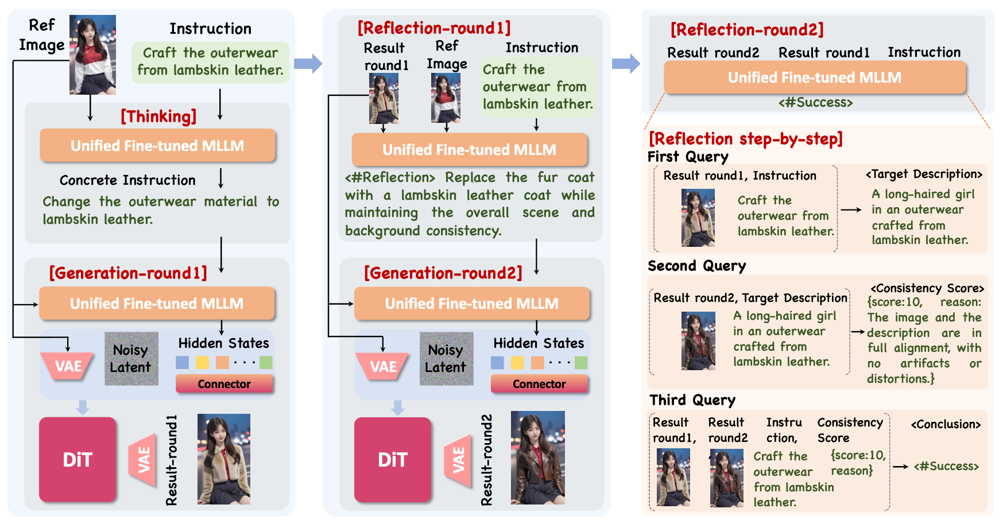
CCF-AConference on Computer Vision and Pattern Recognition (CVPR), 2026
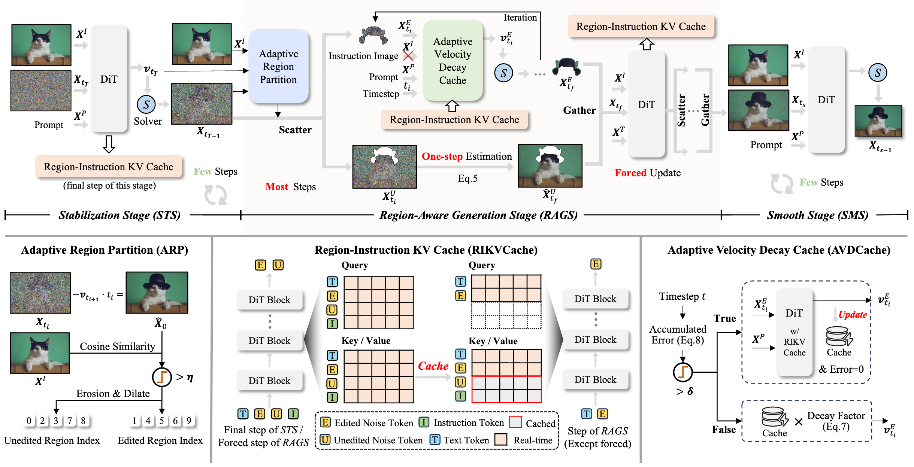
CCF-AInternational Conference on Learning Representations (ICLR), 2026
 PDF
PDF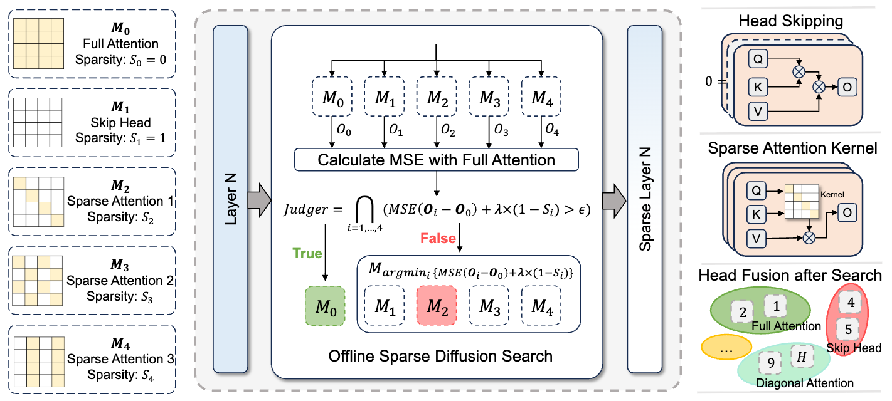
CCF-A2025
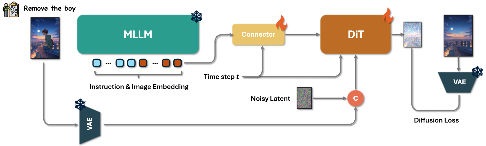
TechReport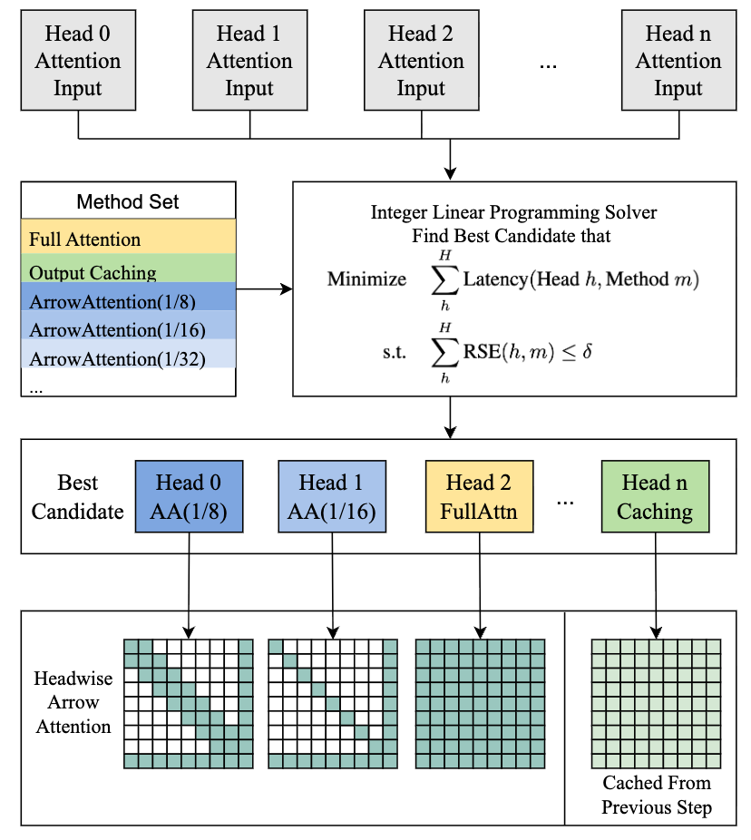
CCF-A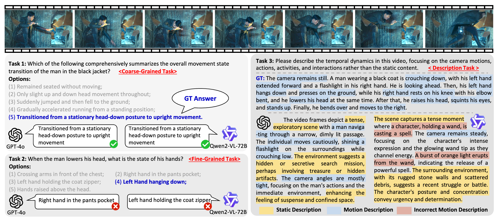
CCF-AConference on Neural Information Processing Systems (NeurIPS), 2025
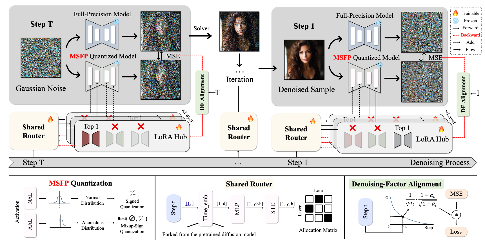
CCF-A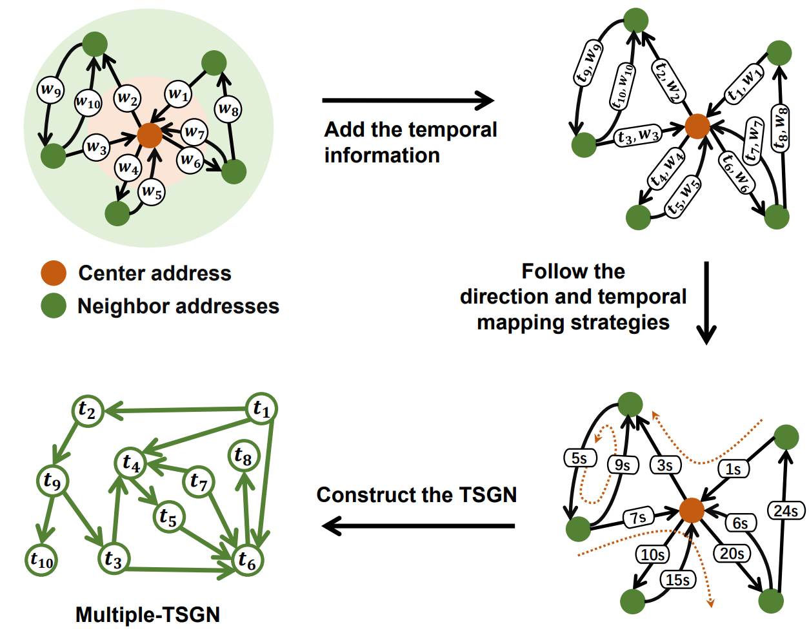
CCF-A2024
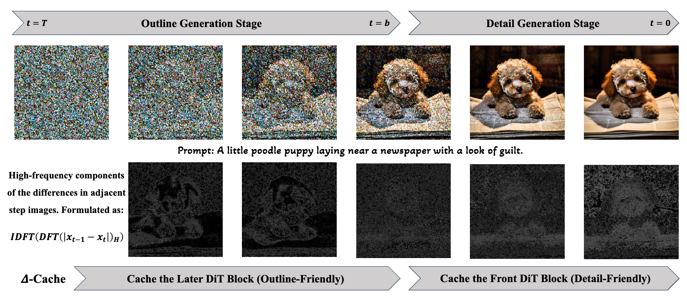
CCF-AInternational Journal of Computer Vision (IJCV), Minor Revision, 2024
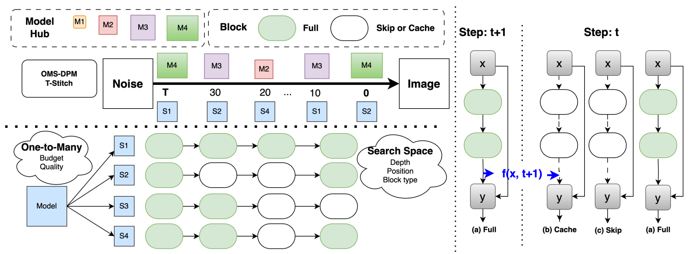
EINeurIPS Workshop, 2024
2021
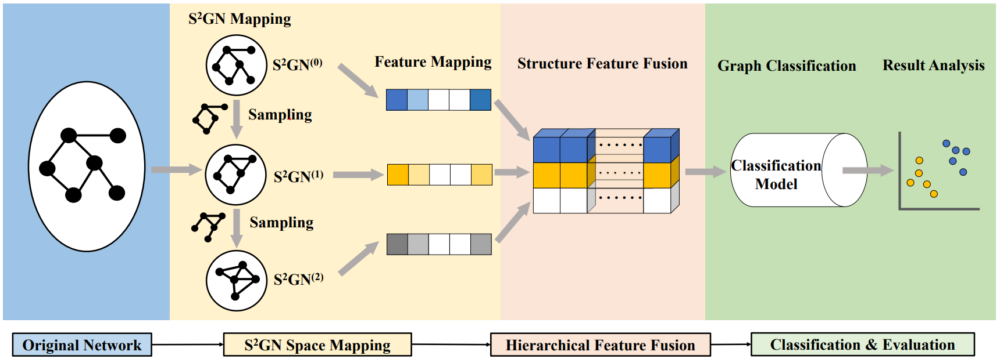
CAS-2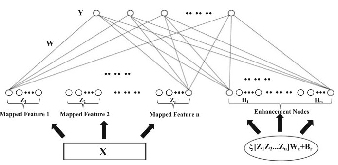
BookInternship

StepFun (阶跃星辰), Shanghai, P.R. China
Foundation Model Algorithm Intern (AIGC), from Oct. 2024 to Mar. 2026
Advisor: Gang Yu and Xianfang Zeng.
Focused on instruction-based image editing, video generation and efficient model inference.
Education
College of Future Information Technology, Fudan University, Shanghai, P.R. China
Ph.D., from Sep. 2022 to June 2027 (expected)
Majored in Electronic Science and Technology. Rank: 4/25; GPA: 3.6/4.0.
Jianxing Honors College, Zhejiang University of Technology, Hangzhou, P.R. China
B.Eng., from Sep. 2018 to June 2022
Majored in Automation. Rank: 1/134 (less than 1%); GPA: 4.2/5.0.
Selected Honors & Awards
- Nov. 2024 — Fudan University Outstanding Ph.D. Candidate First-Class Scholarship.
- Oct. 2023 — Huawei Ascend AI Innovation Competition (ShengSi Algorithm Innovation Track), Gold Award.
- Oct. 2023 — The 1st World Science Intelligence Competition (Atmospheric Science Track), Rank: 9/2071.
- Feb. 2023 — PCIC 2022 Causal Inference and Recommendation, Rank: 4/161.
- May 2022 — Outstanding Graduate of Zhejiang Province.
- Dec. 2021 — Zhejiang Provincial Government Scholarship.
- Dec. 2020 — National Scholarship (The ONLY student in School of Information Engineering).
- Oct. 2020 — The 12th National College Student Mathematics Competition, Second Prize.
- Jul 2019 & Sep 2020 — Zhejiang Provincial University Student Mathematics Competition, First Prize × 2.
- Oct. 2019 — The 11th National College Student Mathematics Competition, First Prize.
- Oct. 2017 — National High School Mathematics League and Chinese Mathematical Olympiad, First Prize (Zhejiang Province).